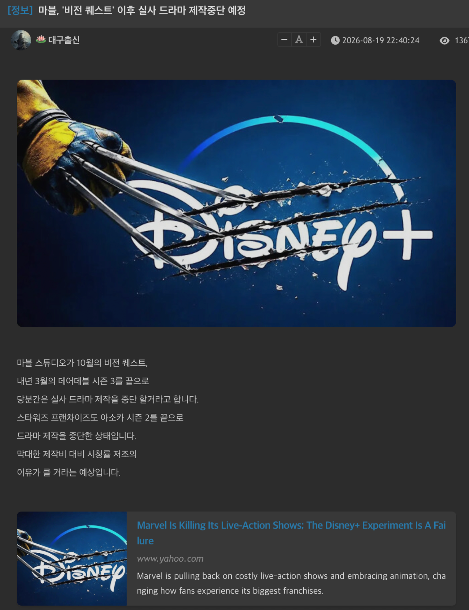

제작비는 많은데 시청률이 저조 하다고 함
올해 10월 <비전퀘스트>
https://youtu.be/_YQmB1Ps22E?si=E282Nw0iISP4Qqnd
내년 3월 <데어데블 시즌3>을 끝으로
드라마 제작 중지

제작비는 많은데 시청률이 저조 하다고 함
올해 10월 <비전퀘스트>
https://youtu.be/_YQmB1Ps22E?si=E282Nw0iISP4Qqnd
내년 3월 <데어데블 시즌3>을 끝으로
드라마 제작 중지
댓글
수집 당시 댓글 2개
초코다이제 · 18 시간 전
애초에 영화를 인질잡고 만들어버리니까 영화 팬들은 영화 팬대로 ㅈ같네가 되버려서 거기에 pc범벅에 ㅌㅋㅌㅌ
sksjwu · 15 시간 전
마블캐릭터 이용해서 뻔한 양산형 미드 만드니까 재미가없음